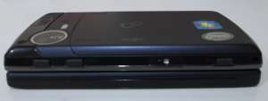
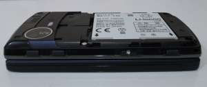
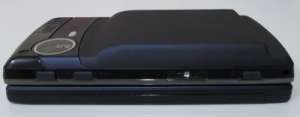
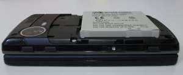

Steward
分享是一種喜悅、更是一種幸福
手機 - Fujitsu LOOX F-07C - Mugen Power 3.7V 3200mA電池
依據Fujitsu原廠數據，F-07C的原廠電池(1400mA)在Symbian系統下，可以使用6小時，而在Windows系統下，則是可以使用2小時，說實話，這些數據都要除以3才是真實使用的狀況，可是，如果透過USB充電使用時，由於開孔位於左側，使用上就會變成相當不方便，尤其是輸入文字時，因此，司徒額外添購一顆Mugen Power 3200mA厚電池，雖然這個厚電外殼沒有設計的很好(密合度以及握感)，不過至少可以增加近一倍的時間，使用上還算是可以接受，只是價格真的有點太貴，司徒覺得使用者可以單獨購買這個厚電外殼，然後自己去購買3.7V電池DIY，其實也是可以達到一樣的目的，價格也相對便宜，只是使用上還是有風險，因此，使用者可以視自己的需求購買
| 原廠1400mA | Mugen Power 3200mA |
|---|---|
|
  |
  |